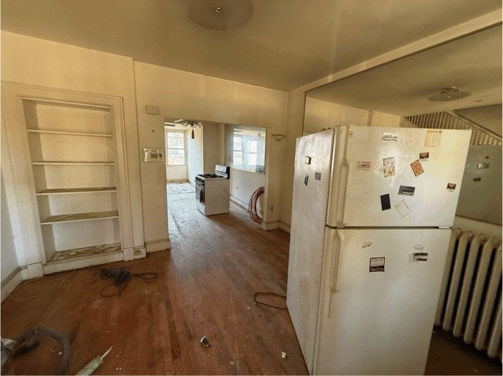
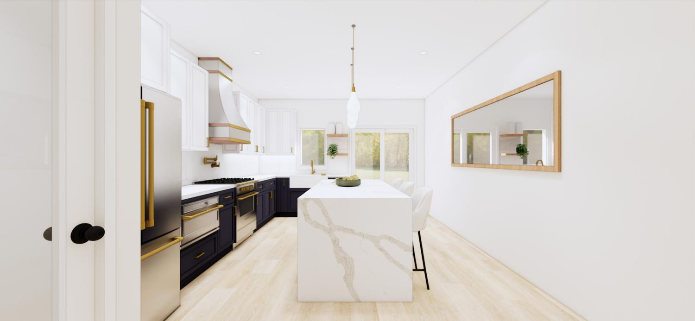
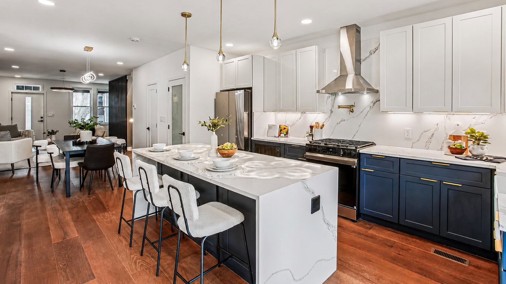

Kitchen · 218 15th Street, Washington DC
White & Navy Chef's Kitchen
A closed-in layout opened into a bright white-and-navy kitchen anchored by a marble waterfall island. We rendered it in 3D first, so the homeowners could weigh island size, cabinet color and pendant placement before a single cabinet was ordered.


